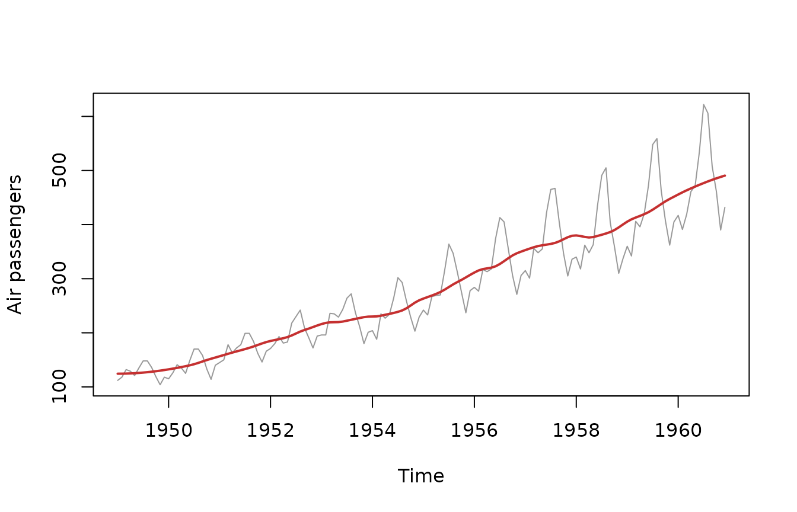

This vignette is a catalogue of every trend-extraction method in
trendseries: which family it belongs to, when to reach for
it, and which parameters it accepts. For worked examples of specific
families, see the companion Moving
Averages and Econometric
Filters vignettes. To split a series into trend, seasonal, and
remainder components instead of extracting a single smooth trend, see Decomposing Series.
The two interfaces
Every method is reachable through two functions that share the same engine and the same parameters:
-
augment_trends()— pipe-friendly. Takes adata.frame/tibble, addstrend_{method}columns, and supports grouped series viagroup_cols. -
extract_trends()— takes ats/xts/zooobject and returnstsobjects (a singletsfor one method, a named list for several).
# Data-frame interface: adds a trend_stl column
head(augment_trends(ibcbr, value_col = "index", methods = "stl"))
#> # A tibble: 6 × 3
#> date index trend_stl
#> <date> <dbl> <dbl>
#> 1 2003-01-01 67.1 70.2
#> 2 2003-02-01 68.8 70.2
#> 3 2003-03-01 72.2 70.3
#> 4 2003-04-01 71.3 70.4
#> 5 2003-05-01 70.0 70.5
#> 6 2003-06-01 68.8 70.7
# Time-series interface: returns a ts object
hp_trend <- extract_trends(AirPassengers, methods = "hp")
class(hp_trend)
#> [1] "ts"Pass several methods at once to compare them:
trends <- augment_trends(
ibcbr,
value_col = "index",
methods = c("hp", "stl", "henderson")
)
head(trends)
#> # A tibble: 6 × 5
#> date index trend_hp trend_stl trend_henderson
#> <date> <dbl> <dbl> <dbl> <dbl>
#> 1 2003-01-01 67.1 69.0 70.2 NA
#> 2 2003-02-01 68.8 69.3 70.2 NA
#> 3 2003-03-01 72.2 69.6 70.3 NA
#> 4 2003-04-01 71.3 69.9 70.4 NA
#> 5 2003-05-01 70.0 70.2 70.5 NA
#> 6 2003-06-01 68.8 70.5 70.7 NAThe unified parameter system
Rather than exposing every method’s idiosyncratic arguments,
trendseries routes a small set of generic
parameters to whichever method-specific option they correspond to.
Sensible, frequency-aware defaults mean you rarely need to set them.
| Parameter | Applies to | Meaning |
|---|---|---|
window |
moving-average methods (ma, wma,
triangular, ewma, median,
gaussian, stl) |
Number of observations in the smoothing window. |
smoothing |
hp, loess, spline,
ewma, kernel, kalman
|
Amount of smoothing (interpretation varies by method). |
band |
bandpass filters (bk, cf) |
c(low, high) cycle periods to keep. |
align |
ma, wma, triangular,
gaussian
|
"center" (default), "right" (causal), or
"left". |
params |
all | A named list for any remaining method-specific options. |
# A wider HP smoothing and a 12-month moving average, in one call
augment_trends(
ibcbr,
value_col = "index",
methods = c("hp", "ma"),
smoothing = 1600,
window = 12
) |>
head()
#> # A tibble: 6 × 4
#> date index trend_hp trend_ma
#> <date> <dbl> <dbl> <dbl>
#> 1 2003-01-01 67.1 68.9 NA
#> 2 2003-02-01 68.8 69.2 NA
#> 3 2003-03-01 72.2 69.5 NA
#> 4 2003-04-01 71.3 69.9 NA
#> 5 2003-05-01 70.0 70.2 NA
#> 6 2003-06-01 68.8 70.5 70.6Frequency-aware defaults adapt to the data: for monthly series the HP
smoothing parameter defaults to lambda = 14400 and the
moving-average window to 12; for quarterly series,
lambda = 1600 and a window of 4 (Ravn & Uhlig,
2002).
Method catalogue
trendseries ships 20 trend methods across four
families.
| Method | Category | Description | Typical use |
|---|---|---|---|
hp |
econometric | Hodrick-Prescott filter | General-purpose business-cycle trend |
hamilton |
econometric | Hamilton regression filter | HP alternative without spurious cycles |
bn |
econometric | Beveridge-Nelson decomposition | Permanent/transitory split |
ucm |
econometric | Unobserved components model | Model-based, stochastic trend |
bk |
bandpass | Baxter-King bandpass filter | Isolating a cycle frequency band |
cf |
bandpass | Christiano-Fitzgerald bandpass filter | Asymmetric bandpass, uses endpoints |
ma |
moving average | Simple moving average | Quick, intuitive smoothing |
wma |
moving average | Weighted moving average | Smoothing with custom weights |
ewma |
moving average | Exponentially weighted moving average | Recent-weighted, real-time smoothing |
triangular |
moving average | Triangular moving average | Smoother than a simple MA |
median |
moving average | Median filter | Robust to outliers/spikes |
gaussian |
moving average | Gaussian-weighted moving average | Smooth, bell-weighted average |
spencer |
moving average | Spencer’s 15-term moving average | Classic actuarial graduation |
henderson |
moving average | Henderson moving average | Trend term inside X-11 seasonal adj. |
stl |
smoothing | Seasonal-trend decomposition via Loess | Trend from strongly seasonal data |
loess |
smoothing | Local polynomial regression | Flexible non-parametric trend |
spline |
smoothing | Smoothing splines | Smooth curve with automatic penalty |
poly |
smoothing | Polynomial trends | Simple global trend shape |
kernel |
smoothing | Kernel smoother | Non-parametric, bandwidth-controlled |
kalman |
smoothing | Kalman filter/smoother | Adaptive trend for noisy series |
Moving averages
Moving-average methods replace each point with a (possibly weighted)
average of its neighbours. They are fast, transparent, and a good
default for exploratory work. Control the smoothing through
window (and align for causal vs. centred
variants). ma, median, and
henderson also accept a vector of windows,
returning one trend per window.
augment_trends(
ibcbr,
value_col = "index",
methods = "henderson",
window = c(13, 23)
) |>
head()
#> # A tibble: 6 × 4
#> date index trend_henderson_13 trend_henderson_23
#> <date> <dbl> <dbl> <dbl>
#> 1 2003-01-01 67.1 NA NA
#> 2 2003-02-01 68.8 NA NA
#> 3 2003-03-01 72.2 NA NA
#> 4 2003-04-01 71.3 NA NA
#> 5 2003-05-01 70.0 NA NA
#> 6 2003-06-01 68.8 NA NASee Moving Averages for the full treatment.
Smoothing methods
Smoothing methods fit a flexible curve to the data. stl
and loess are locally adaptive; spline and
kernel trade off fit against smoothness through a
penalty/bandwidth; poly imposes a single global shape. The
smoothing parameter tunes how aggressively they smooth.
loess_trend <- extract_trends(AirPassengers, methods = "loess", smoothing = 0.3)
plot(AirPassengers, col = "grey60", ylab = "Air passengers")
lines(loess_trend, col = "#C53030", lwd = 2)
Econometric filters
These are the workhorses of applied macroeconomics. The
Hodrick-Prescott filter (hp) is the most widely used;
hamilton is a regression-based alternative that avoids HP’s
well-known spurious-cycle artefacts; bn and
ucm are model-based decompositions into permanent and
transitory parts.
augment_trends(
gdp_construction,
value_col = "index",
methods = c("hp", "hamilton")
) |>
head()
#> # A tibble: 6 × 4
#> date index trend_hp trend_hamilton
#> <date> <dbl> <dbl> <dbl>
#> 1 1995-01-01 100 101. NA
#> 2 1995-04-01 100 101. NA
#> 3 1995-07-01 100 102. NA
#> 4 1995-10-01 100 103. NA
#> 5 1996-01-01 97.8 103. NA
#> 6 1996-04-01 101. 104. NAThe HP filter has a one-sided (real-time) variant for nowcasting, where future observations must not influence the current estimate:
extract_trends(
AirPassengers,
methods = "hp",
params = list(hp_onesided = TRUE)
) |>
head()
#> Jan Feb Mar Apr May Jun
#> 1949 111.9999 118.0001 130.6667 132.5000 128.1995 133.1425See Econometric Filters for details.
Bandpass filters
Bandpass filters (bk, cf) keep only the
fluctuations whose periodicity falls inside a chosen band, removing both
the long-run trend and high-frequency noise. Specify the band with
band = c(low, high) in periods (quarters for quarterly
data):
extract_trends(
AirPassengers,
methods = "cf",
band = c(18, 96)
) |>
head()
#> Jan Feb Mar Apr May Jun
#> 1949 129.2137 124.0873 127.3082 114.4644 98.0897 105.6196Decomposition vs. trend extraction
The methods above estimate a single smooth trend. When you
instead want to split a series into trend + seasonal +
remainder, use decompose_series(), which offers
five methods of its own:
| Method | Engine | Notes |
|---|---|---|
stl |
stats::stl() |
Loess-based, robust option available. |
regression |
OLS | Polynomial trend + seasonal dummies. |
classic |
stats::decompose() |
Classical moving-average; additive or multiplicative. |
bsm |
stats::StructTS() |
State-space model; components for every point. |
seats |
X-13ARIMA-SEATS | Requires the optional seasonal
package. |
decompose_series(gdp_construction, value_col = "index", methods = "stl") |>
head()
#> # A tibble: 6 × 5
#> date index trend_stl seasonal_stl remainder_stl
#> <date> <dbl> <dbl> <dbl> <dbl>
#> 1 1995-01-01 100 102. -4.37 1.93
#> 2 1995-04-01 100 101. -1.62 0.476
#> 3 1995-07-01 100 100. 4.44 -4.62
#> 4 1995-10-01 100 99.4 1.55 -0.946
#> 5 1996-01-01 97.8 101. -4.37 1.42
#> 6 1996-04-01 101. 102. -1.62 0.613The dedicated Decomposing Series vignette covers these in depth.